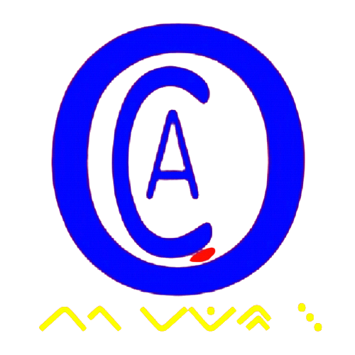

HOME
BERDIRI SEJAK 2019
ACO INDONESIA
Search in the Quran
Search in the Quran:
All Chapters
1. Al-Fatiha [7]
2. Al-Baqara [286]
3. Aal-e-Imran [200]
4. An-Nisa [176]
5. Al-Maeda [120]
6. Al-Anaam [165]
7. Al-Araf [206]
8. Al-Anfal [75]
9. At-Taubah [129]
10. Yunus [109]
11. Hud [123]
12. Yusuf [111]
13. Ar-Rad [43]
14. Ibrahim [52]
15. Al-Hijr [99]
16. An-Nahl [128]
17. Al-Isra [111]
18. Al-Kahf [110]
19. Maryam [98]
20. Taha [135]
21. Al-Anbiya [112]
22. Al-Hajj [78]
23. Al-Mumenoon [118]
24. An-Noor [64]
25. Al-Furqan [77]
26. Ash-Shuara [227]
27. An-Naml [93]
28. Al-Qasas [88]
29. Al-Ankaboot [69]
30. Ar-Room [60]
31. Luqman [34]
32. As-Sajda [30]
33. Al-Ahzab [73]
34. Saba [54]
35. Fatir [45]
36. Ya Seen [83]
37. As-Saaffat [182]
38. Sad [88]
39. Az-Zumar [75]
40. Ghafir [85]
41. Fussilat [54]
42. Ash-Shura [53]
43. Az-Zukhruf [89]
44. Ad-Dukhan [59]
45. Al-Jathiya [37]
46. Al-Ahqaf [35]
47. Muhammad [38]
48. Al-Fath [29]
49. Al-Hujraat [18]
50. Qaf [45]
51. Adh-Dhariyat [60]
52. At-tur [49]
53. An-Najm [62]
54. Al-Qamar [55]
55. Al-Rahman [78]
56. Al-Waqia [96]
57. Al-Hadid [29]
58. Al-Mujadila [22]
59. Al-Hashr [24]
60. Al-Mumtahina [13]
61. As-Saff [14]
62. Al-Jumua [11]
63. Al-Munafiqoon [11]
64. At-Taghabun [18]
65. At-Talaq [12]
66. At-Tahrim [12]
67. Al-Mulk [30]
68. Al-Qalam [52]
69. Al-Haaqqa [52]
70. Al-Maarij [44]
71. Nooh [28]
72. Al-Jinn [28]
73. Al-Muzzammil [20]
74. Al-Muddathir [56]
75. Al-Qiyama [40]
76. Al-Insan [31]
77. Al-Mursalat [50]
78. An-Naba [40]
79. An-Naziat [46]
80. Abasa [42]
81. At-Takwir [29]
82. AL-Infitar [19]
83. Al-Mutaffifin [36]
84. Al-Inshiqaq [25]
85. Al-Burooj [22]
86. At-Tariq [17]
87. Al-Ala [19]
88. Al-Ghashiya [26]
89. Al-Fajr [30]
90. Al-Balad [20]
91. Ash-Shams [15]
92. Al-Lail [21]
93. Ad-Dhuha [11]
94. Al-Inshirah [8]
95. At-Tin [8]
96. Al-Alaq [19]
97. Al-Qadr [5]
98. Al-Bayyina [8]
99. Al-Zalzala [8]
100. Al-Adiyat [11]
101. Al-Qaria [11]
102. At-Takathur [8]
103. Al-Asr [3]
104. Al-Humaza [9]
105. Al-fil [5]
106. Quraish [4]
107. Al-Maun [7]
108. Al-Kauther [3]
109. Al-Kafiroon [6]
110. An-Nasr [3]
111. Al-Masadd [5]
112. Al-Ikhlas [4]
113. Al-Falaq [5]
114. An-Nas [6]
in
Yusuf Ali - English
Shakir - English
Pickthal - English
Transliteration
Arabic
Urdu translation
French translation
Spanish translation
Indonesian translation
Melayu translation
German translation
Russian translation
Download Islamic Softwares FREE
|
Free Code
www.SearchTruth.com